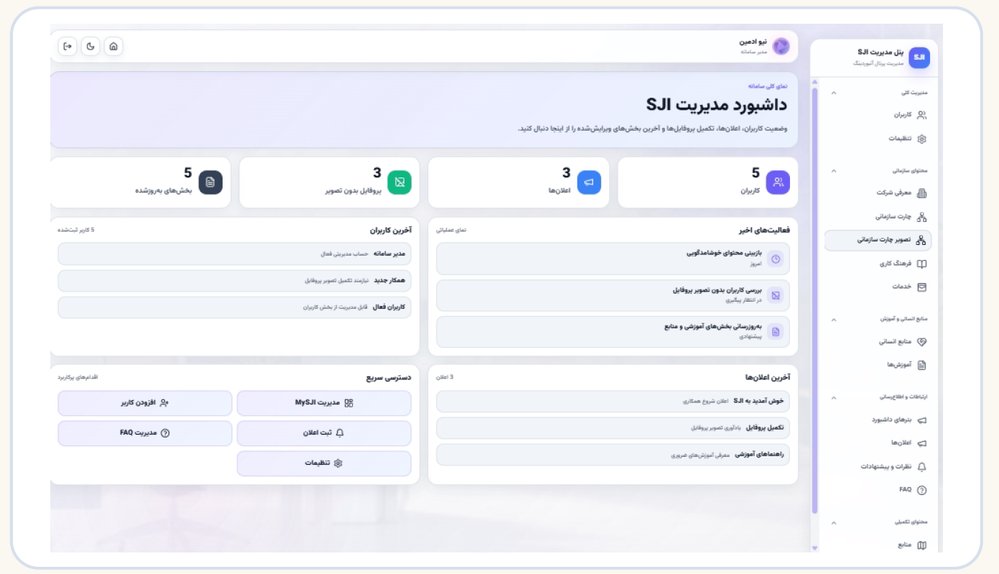

Enterprise / Product Work
MySJI & Internal Portals
Internal service portals connecting employees with organizational tools and workflows.

SJI internal management portal: users, organizational content and administrative workflows.
Product Overview
MySJI and internal service portals provide access to organizational tools and employee workflows. These examples show the wider enterprise environment alongside SJI’s onboarding and performance-evaluation products.
My Role & Product Context
My Product Owner work at SJI centered on enterprise requirements, workflows and delivery with stakeholders and users. These team-developed portal examples illustrate the related organizational product context.
Product Experience
Employees access organizational services and modules through portal interfaces. The gallery includes two multi-product views, with the portal examples identified in the captions.
Product Screens
Explore the interfaces and workflows below.

 View full image ↗
View full image ↗ View full image ↗
View full image ↗